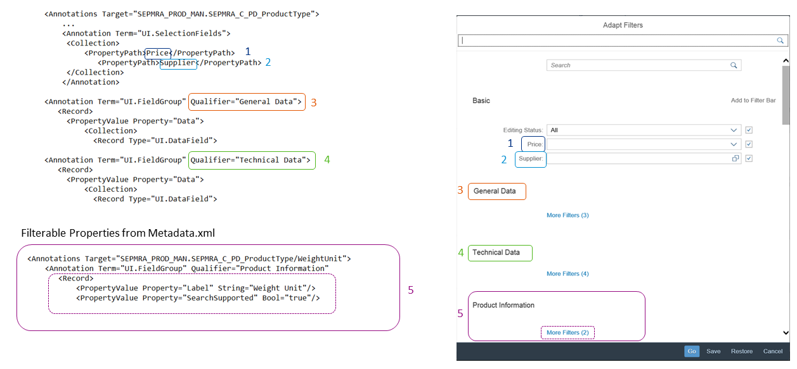

Adapting the Smart Filter Bar
For the SmartFilterBar, you can define application-specific selection fields by using com.sap.vocabularies.UI.v1.SelectionFields and field groups for the filter popup.
This video shows the step-by-step procedure for adding a default filter to the smart filter bar:
Disclaimer: The below video  is not part of the SAP product documentation. Please read the legal disclaimer for video links before viewing this video.
is not part of the SAP product documentation. Please read the legal disclaimer for video links before viewing this video.
is not part of the SAP product documentation. Please read the legal disclaimer for video links before viewing this video.

List Report: Adapt Filters PopupAdding Filters
Use com.sap.vocabularies.UI.v1.SelectionFields to add filter fields to the smart filter bar. Specify additional PropertyPath values as shown in the code sample below
Annotation
XML
<Annotations Target="SEPMRA_PROD_MAN.SEPMRA_C_PD_ProductType"> ... <Annotation Term="UI.SelectionFields"> <Collection> <PropertyPath>Price</PropertyPath> <PropertyPath>Supplier</PropertyPath> </Collection> </Annotation>